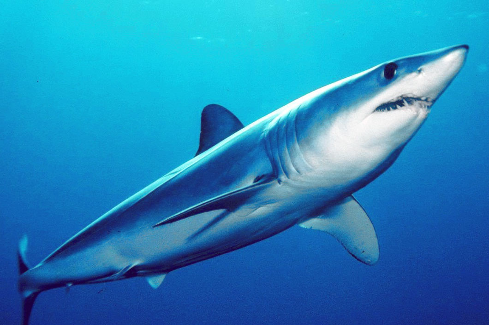
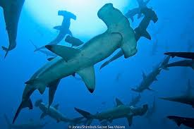

GENERAL FACTS
Sharks are one of the most important animals in the underwater ecosystem. They have been around for millions of years. Based on fossils found in Australia and the United States, scientists hypothesize that sharks have been swimming in the ocean for around 455 million years! Sharks do not have bones, and they use their gills to filter oxygen from the water. Sharks are a special type of fish, known as the "elasmobrach" which means fish made of cartilage. Their skeletons made of cartilage are much lighter than bone, making them extremely floatable. There are about 360 different species of sharks, which are divided into 30 different families. Unlike popular belief, sharks only attack humans if they are intimidated or feel attacked themselves... They don't crave humans for breakfast!
LIFESPAN AND DIET
Depending on the shark, the life expectancy of the shark can vary widely. Additionally, determining the lifespan of sharks is quite difficult as they have very complicated migratory and feeding patterns, so they're hard to keep track of. Sharks in the wild have a much longer life expectancy than those in captivity. Sharks in the wild range from living 20-40 years (like Great White sharks), up to hundreds of years (like the Greenland shark). Sceintists determine the age of certain sharks, like the Silky shark or the Blackspot shark, depending on the amount of growth rings that form on the vertebrate.
Almost all sharks are meat eaters, or carnivores. They often feed alone, although sometimes feeding can attract other sharks because they're curious. They eat mostly fish, dolphins, and seals, and occassionally turtles and seagulls. Sometimes, sharks even eat other sharks! There are a few types of sharks that are pretty harmless, and strangely enough, they are the biggest ones! The Basking shark and the Whale shark, HUGE animals, eat plankton.
PRESERVATION
As one of the top predators of the ocean, they play an essential role in the ocean's ecosystem! There is an increased demand and exploitation of some shark species and products, and so there is a rising concern on preserving sharks.
Sharks have a slow sexual growth, and can only have small numbers of children at a time. These factors make sharks extremely vulnerable to overfishing, because it takes so long for them to reproduce! Sharks are being exploited for many things, but the main issue is shark finning, where sharks are killed and finned for shark fin soup.
There are many efforts that are being made to preserve sharks in the ocean. Organizations like NOAA manage commercial and recreational shark fisheries in the Atlantic Ocean and work with three regional fishery management councils to conserve and sustainably manage sharks in the Pacific Ocean. By conducting research, assessing stocks, working with U.S. fishermen, and implementing restrictions on shark harvests, NOAA has made significant progress toward ending overfishing and rebuilding overfished stocks for long-term sustainability.
GALLERY